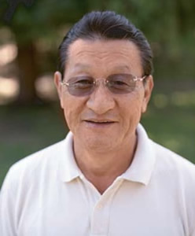
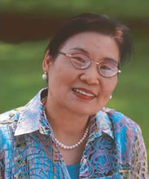
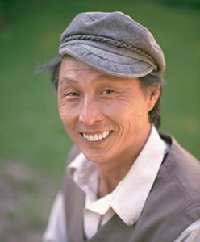
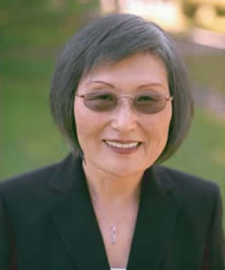
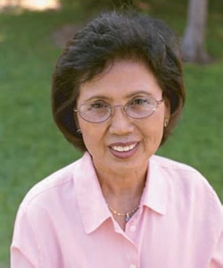
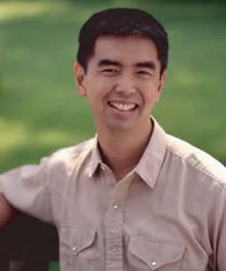
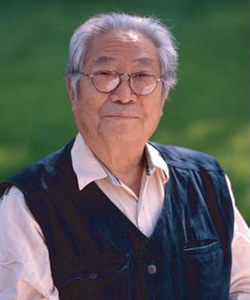

Oral History Participants 구두의 역사 참가자
Eungie Joo 주은지
Birth: March 3, 1969
Arrived in US: N/A
Birthplace: Bellefonte, Pennsylvania
Current Residence: Los Angeles, California
Residence 06/25/1950: N/A
Employment: Art Gallery Director and Curator
Min Yong Lee 이민용
Birth: January 26, 1941
Arrived in US: August, 1976
Birthplace: Seoul, South Korea
Current Residence: Cambridge, MA
Residence 06/25/1950: Seoul, Korea
Employment: Lecturer and Researcher

Suntae Chun 전순태
Birth: September 9, 1939
Arrived in US: September 1, 1965
Birthplace: Kaesong, Korea
Current Residence: Lancaster, CA
Residence 06/25/1950: Kaesong, Korea
Employment: Self-employed

Kee Park 박기춘
Birth: October 21, 1939
Arrived in US: July 15, 1971
Birthplace: Buk chung, North Korea
Current Residence: New England
Residence 06/25/1950: Seoul, Korea
Employment: Retired Teacher

Soam Chang 장소암
Birth: April 13, 1946
Arrived in US: November 15, 1976
Birthplace: Seoul, South Korea
Current Residence: San Francisco, CA
Residence 06/25/1950: Seoul, South Korea
Employment: Self Employed, Interior Business

Song J. Park 박송자
Birth: June 15, 1938
Arrived in US: August 19, 1968
Birthplace: Hadong Kun Kyung Nam, Korea
Current Residence: San Francisco, CA
Residence 06/25/1950: Jin Chu, Kyung Nam, Korea
Employment: Administrator, Univ. Procurement System

Helen Kyungsook Daniels 최경숙
Birth: December 11, 1935
Arrived in US: April 12, 1963
Birthplace: Pyung Bok, Korea
Current Residence: Petaluma, CA
Residence 06/25/1950: Pyongyang, North Korea
Employment: Quality Assurance Manager

Orson Moon 문오성
Birth: September, 1963
Arrived in US: N/A
Birthplace: Connecticut
Current Residence: Boston, MA
Residence 06/25/1950: N/A
Employment: Progressive International Development Agency

Andrew Park 박기식
Birth: April 12, 1929
Arrived in US: April 19, 1972
Birthplace: Daegu, Korea
Current Residence: Haverhill, MA
Residence 06/25/1950: Daegu, Korea
Employment: Retired
Helen Sunhee Kim 김선희
Birth: July 10, 1963
Arrived in US: March 13, 1976
Birthplace: Seoul, South Korea
Current Residence: Oakland, CA
Residence 06/25/1950: N/A
Employment: Consultant

Kyung Hui Lee 강경희
Birth: February 13, 1948
Arrived in US: June, 1973
Birthplace: Kim Hae, South Korea
Current Residence: Seoul, South Korea
Residence 06/25/1950: Province near GheeRee Mountain
Employment: Physician

Won Yop Kim 김원엽
Birth: January 5, 1927
Arrived in US: January 13, 1979
Birthplace: Yongbyon, Pyung Bok, Korea
Current Residence: Andover, MA
Residence 06/25/1950: Seoul, Korea
Employment: Retired